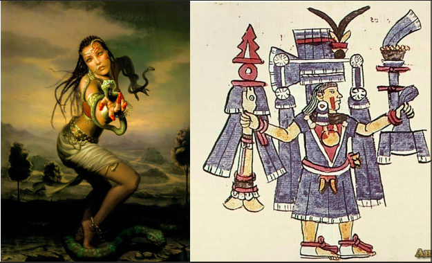

Hay una historia que los guías no siempre cuentan, que los letreros del INAH no explican del todo, y que la mayoría de los turistas se pierden. Es la historia que le da nombre a este pueblo. No a la zona arqueológica, no al convento agustino. Al pueblo entero. A los 30,000 habitantes que viven aquí. Al Pueblo Mágico que visitaste o que estás planeando visitar.
La historia de Malinalxóchitl — la mujer que fue abandonada mientras dormía, que fue acusada de bruja, que fue borrada de la historia oficial, y cuyo nombre aún resuena en cada calle de Malinalco.
El nombre que lo dice todo
Antes de entrar en la historia, hay que entender el nombre. En náhuatl, Malinalco significa literalmente "lugar donde se adora a Malinalxóchitl". No es el nombre de un río, ni de un cerro, ni de una batalla. Es el nombre de una mujer. De una diosa. De una hechicera.
El propio nombre de Malinalxóchitl viene de dos palabras: malinalli — hierba torcida o zacate carbonero — y xóchitl — flor. Su nombre completo se traduce como "Flor de hierba torcida". En la tradición popular también se le conoce como Matlalatl: hermosa mujer de las aguas azules.
¿Quién fue Malinalxóchitl?
Según la mitología mexica, Malinalxóchitl era hermana del dios Huitzilopochtli, el dios del sol y la guerra, deidad principal del panteón azteca. Eso la ponía en una posición de poder enorme dentro del mundo prehispánico.
Pero Malinalxóchitl no era una diosa guerrera. Era la diosa de algo más oscuro y más antiguo: las serpientes, los escorpiones y los insectos del desierto. Se decía que podía convertirse en cualquier animal para dañar a sus enemigos. Que su sola mirada podía lanzar sobre alguien una nube de criaturas peligrosas. Que dominaba las artes de la hechicería, la adivinación y los presagios.
La traición más oscura
Durante la gran peregrinación azteca desde Aztlán hacia lo que sería Tenochtitlan — una de las migraciones fundacionales de la civilización mexica — Malinalxóchitl viajaba con su pueblo. Era la hermana del dios que los guiaba. Debería haber sido intocable.
Pero Huitzilopochtli tomó una decisión. Una noche, mientras Malinalxóchitl dormía, el dios ordenó al pueblo que se levantara en silencio y continuara el camino. Sin despedirse. Sin avisar. Sin dejar rastro. La abandonaron dormida, sola, en medio de la oscuridad, en tierra desconocida.

Cuando despertó y encontró el silencio, entendió lo que habían hecho. No había error. No había accidente. Su propio hermano, el dios más poderoso del panteón azteca, la había desterrado mientras ella soñaba. La razón oficial: su magia sembraba discordia entre el pueblo. La razón real, según muchos historiadores: era demasiado poderosa para controlarla.
Las fuentes históricas del siglo XVI relatan el abandono como una decisión de Huitzilopochtli para proteger al pueblo de los poderes oscuros de su hermana. Pero la tradición oral de Malinalco la recuerda de otra manera: como una mujer sabia y hermosa que representa la esencia femenina del pueblo. La historia oficial y la memoria popular rara vez coinciden.
Cómo llegó a Malinalco
Lo que sigue es donde la leyenda se vuelve más fascinante. Malinalxóchitl no se quedó llorando. No se perdió. No desapareció.
Encontró un pueblo. Se casó con Chimalcuauhtli, el gobernante de Malinalco. Construyó su propio reino. Y en ese reino, su nombre se convirtió en la identidad de todo el lugar. Lugar donde se adora a Malinalxóchitl. Para siempre.
La mujer que fue desterrada por su hermano-dios terminó dándole nombre a un pueblo que hoy es Pueblo Mágico del Estado de México, que recibe miles de visitantes al año, que tiene una zona arqueológica única en el mundo. Huitzilopochtli fue más poderoso. Pero Malinalxóchitl fue más recordada — al menos aquí.
Copil y la venganza que fundó una ciudad
La historia no termina con el abandono. Malinalxóchitl tuvo un hijo con el gobernante de Malinalco: Copil. Y lo educó con un propósito muy específico: vengar la afrenta de su tío Huitzilopochtli.
Cuando Copil creció, comenzó a recorrer los pueblos hablando mal de los aztecas, tratando de levantar a las tribus contra ellos. Pero Huitzilopochtli se enteró. Sus sacerdotes capturaron a Copil y le arrancaron el corazón. La ofrenda fue arrojada al lago, en medio de un cañaveral.
Y aquí viene el giro que pocas personas conocen: según los cronistas, en el lugar donde cayó el corazón de Copil, los aztecas fundaron Tenochtitlan. La capital del imperio más poderoso de Mesoamérica fue edificada sobre los restos del hijo de la mujer que intentaron borrar.
Huitzilopochtli abandonó a Malinalxóchitl. El hijo de Malinalxóchitl fue sacrificado. Y donde cayó su corazón se fundó Tenochtitlan — hoy Ciudad de México. La historia de la hechicera está en el origen de la capital de México.
Su legado en el pueblo mágico
Hoy, si caminas por Malinalco con esta historia en mente, el pueblo se ve diferente. Cada calle lleva su nombre de alguna forma. La zona arqueológica que visitas está en la tierra que ella eligió como hogar. El convento agustino del siglo XVI fue construido sobre un lugar que los mexicas consideraban sagrado — precisamente porque era su territorio.
En la tradición popular local, Malinalxóchitl no es la villana que la historia oficial azteca intentó hacer de ella. Es la esencia femenina de Malinalco. La mujer que fue traicionada y sobrevivió. La hechicera que construyó un reino con sus propias manos — o con su magia, según prefieras creerlo.
Dónde encontrarla hoy en Malinalco
No hay un templo dedicado a ella — al menos no de forma explícita. Pero si sabes dónde mirar, su presencia está en todos lados:
- En el nombre del pueblo. Cada vez que dices "Malinalco", pronuncias su nombre.
- En la zona arqueológica. El nombre oficial del sitio en náhuatl hace referencia directa a su territorio sagrado.
- En las artesanías locales. Las serpientes y las flores en textiles y objetos de barro tienen raíces en su iconografía.
- En los cerros. Los locales mayores hablan de la presencia de la hechicera en las noches de luna llena, cuando el viento del cerro suena diferente.
- En la esencia del pueblo. Esa energía que los visitantes describen — la sensación de que Malinalco tiene algo diferente, algo que no saben nombrar — muchos locales la atribuyen a ella.
Quedarte en Malinalco no es solo hospedarte. Es pasar la noche en el territorio que Malinalxóchitl eligió como hogar. Cantera & Calma está en el Barrio de San Juan, en el corazón del pueblo que lleva su nombre. A veces, en las noches tranquilas, el cerro se escucha diferente.